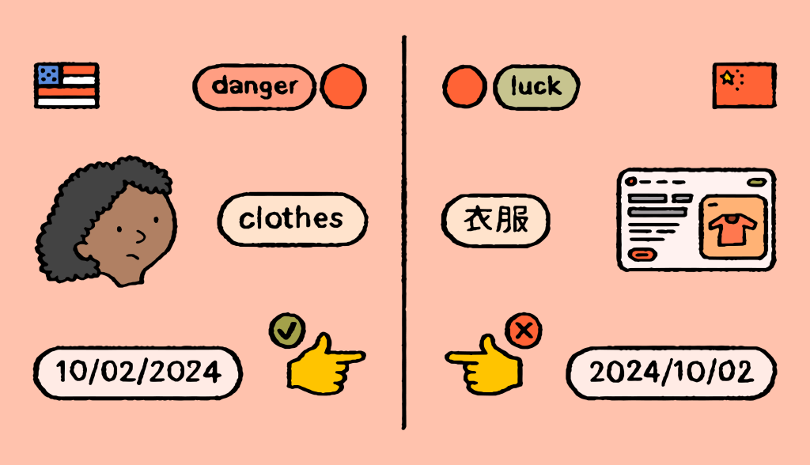

This week’s course focuses on Human-Computer Interaction (HCI) and User Experience (UX) design, particularly emphasizing the importance of human-centred design concepts in interactive media and system development. This session not only extends the project proposal but also delves into an in-depth exploration of how to effectively integrate human behaviour with technical systems.
The lecturer first pointed out that when developing any technology-based project, interface friendliness and user experience are far more important than the technology itself. Even if a program has perfect logic, it is difficult to succeed if it is complicated, confusing, or uncomfortable for users to operate. Therefore, user-centred design thinking should run through every stage of creation from conception and prototyping to final implementation.
The course also discussed key design tools such as “user journey,” “task model,” and “scenario building” in detail. These concepts help us consider not only what a system can do when designing but also how users will use it in what scenarios, as well as their real needs and emotional states. For example How to reduce users’ fear and threshold when designing an interactive system related to the stock market? Another example: How does an AR experience in public spaces consider the perspective of bystanders and the social impact of interaction?
Norse News (2020) The Fun Theory. Norse News [online]. Available at: the Norse News website (Accessed: 25 February 2025)
Benli, K. (2015) Usage of semi‑abstract earcon within “world’s deepest bin” [Online image]. Available at: ResearchGate (Accessed: 25 February 2025)
The lecturer demonstrated how to combine “natural behaviours” (such as throwing garbage or climbing stairs) with creative design through specific cases like “the world’s deepest trash bin” or “piano stairs” interactive installations, thus stimulating users’ desire to participate. These cases illustrate that effective UX design not only solves functional problems but also inspires users’ active engagement through “fun” and “emotional drivers”.

Lokalise (2024) Illustration showing date format differences (European vs. US) [Online image]. Available at: the Lokalise website (Accessed: 25 February 2025)
Additionally, the course emphasized the impact of cultural context on user understanding, such as the issue of cultural misinterpretation in icon design, which is particularly critical for cross-cultural user groups. Therefore, when conducting interface design and symbolic expression, it is essential to fully test and consider the cognitive differences among different user groups.
Finally, the course encouraged us to create “user flow sketches” and “interaction point mappings” to visualize and clarify the product structure. This not only facilitates communication but also helps identify potential problems or improvement opportunities early on. Meanwhile, the lecturer introduced how to integrate the methods of “reflective design,” “future design,” and “critical design” to explore the relationship between technology and social culture, making design not only useful but also meaningful.